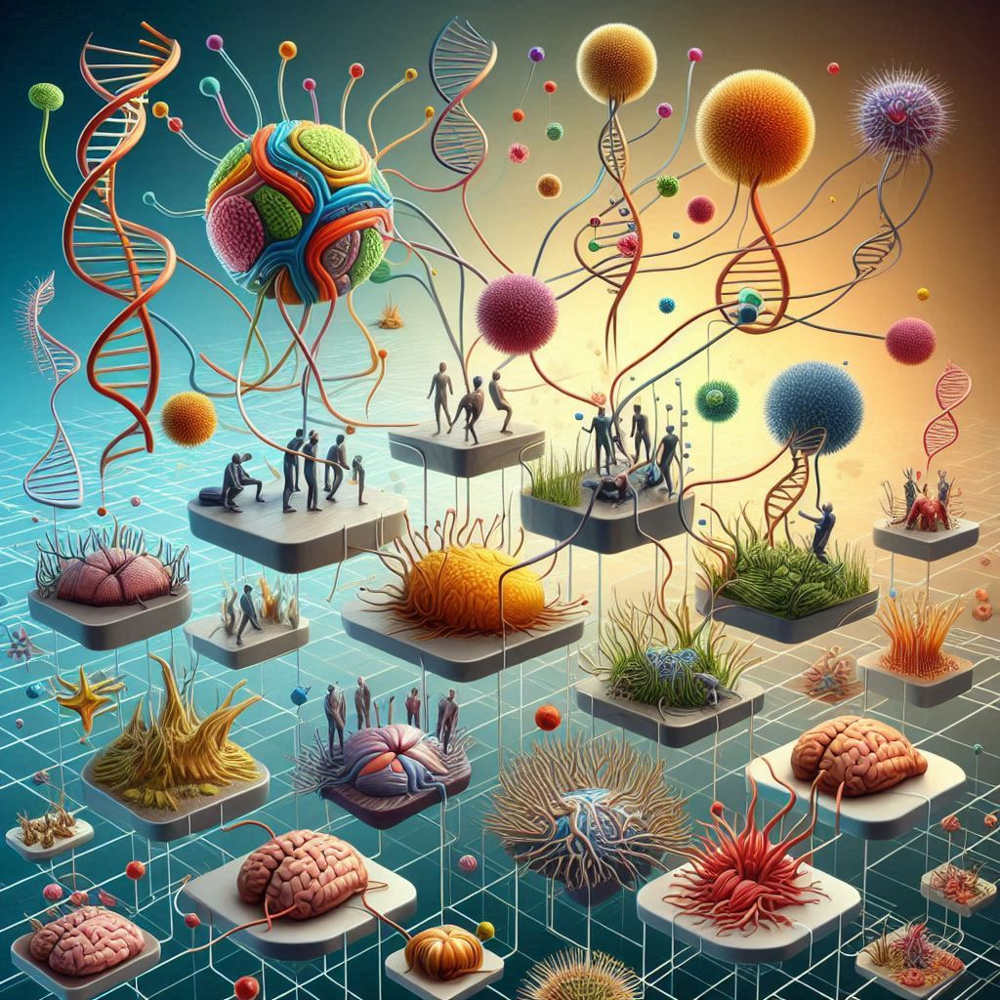

이기적 유전자
목차
작가
리처드 도킨스
출판일
1976년
감상평에 대한 AI그림
유전자의 관점에서 진화를 바라보는 새로운 시각을 제시한 책으로, 생명체의 이타적 행동조차 유전자의 이기적 전략일 수 있다는 점이 흥미로웠다. 생명과학 연구자로서 유전자의 역할에 대한 깊은 통찰을 얻게 되었다.

감상평에 대한 AI평가
감상평 전반에 걸쳐 생명과 진화에 대한 깊은 흥미와 과학적 통찰을 얻으려는 열망이 두드러진다. 유전자라는 미시적 단위를 통해 거시적인 생명 현상을 이해하려는 탐구 정신이 돋보이며, 진화론적 관점이 주는 신선한 충격과 경외감이 감상평에 묻어난다. 특히, 이타성의 기원을 유전자의 관점에서 바라보는 과정에서 복잡한 생명 시스템에 대한 깊은 사색이 드러난다. 이는 연구자로서의 정체성과도 연결되는 감정이다.